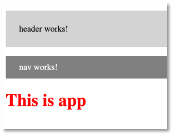

Angular¶
Angular gehört neben React.js und Vue.js zu den meisteverwendeten Frameworks für die Entwicklung sogenannter Single-Page-Applikationen. In einer Single-Page-Applikation wird eine Seite vom Webserver geladen und diese Seite durch unterschiedliche Inhalte befüllt, je nach Nutzerinteraktion. Diese Inhalte werden in Angular durch sogenannte Komponenten bereitgestellt. Komponenten sind die Grundbausteine einer Angular-Anwendung.
Das erste Release von Angular erschien 2010 (damals noch unter dem Namen AngularJS, ab Version 2 nur noch Angular). React und Vue kamen 2013 bzw. 2014 erstmalig heraus. Angular wird hauptsächlich von Google, React hauptsächlich von Facebook und Vue als Community-Version entwickelt. Alle drei Frameworks stehen unter MIT-Lizent.
Neben HTML und CSS verwendet Angular TypeScript. TypeScript ist eine Obermenge von JavaScript. Das bedeutet, dass jeder JavaScript-Code auch TypeScript ist, aber nicht umgekehrt. TypeScript-Code wird compiliert und erzeugt JavaScript-Code, der vom Browser ausgeführt werden kann. Im Gegensatz zu JavaScript ist TypeScript typsicher und klar objektorientiert.
Erstes Projekt erstellen¶
Eine Angularanwendung besteht hauptsächlich aus Komponenten und
Services. Um die Anwendung selbst sowie Komponenten und Services
zu erstellen, wird am besten das Command Line Interface for
Angular (Angular CLI) verwendet.
Öffnen Sie ein Terminal (Windows-Nutzerinnen sollten die
Git-Bash verwenden, die Sie
bereits mit Git installiert haben). Wechseln Sie im Terminal
in das Verzeichnis, das Ihre Projekte enthalten soll. Für das
Wechseln in andere Verzeichnisse nutzen Sie den
cd Befehl (change directory). Um die Anwendung
"first" zu erzeugen, geben Sie folgenden Befehl in das
Terminal ein:
ng new first
ng steht für Angular. Mit dem Attribut new geben Sie an,
dass Sie ein neues Projekt erzeugen wollen. first ist der
Name des Projektes. Wenn Sie gefragt werden, ob Sie Angular routing
verwenden möchten, geben Sie ein y ein. Wenn Sie nach dem stylesheet
format gefragt werden, können Sie CSS einfach mit Enter bestätigen.
? Would you like to add Angular routing? Yes
? Which stylesheet format would you like to use? CSS
Wenn alles geklappt hat, erhalten Sie im Terminal eine Ausgabe in der Form:

Es entsteht ein Ordner first in Ihrem Projekte-Verzeichnis. Wechseln Sie
in dieses Verzeichnis:
cd first
Führen Sie darin den Befehl:
npm install
aus. Damit werden alle Abhängigkeiten, die in der Datei package.json definiert sind, geladen und das node_modules-Verzeichnis erstellt. Siehe z.B. hier.
Wenn Sie Ihr Projekt mit git verwalten, dann ist es ratsam, das node_modules-Verzeichnis von der git-Verwaltung auszuschließen. Es wird ja immer durch npm install erstellt. Fügen Sie dazu in Ihre .gitignore die Zeile node_modules/** ein. Dann werden alle Inhalte aller node_modules-Verzeichnisse in Ihrem Repository ignoriert.
Danach geben Sie
ng serve
ein. Es werden die entsprechenden TypeScript-Dateien compiliert und es erscheint am Ende eine Ausgabe, wie z.B.
✔ Browser application bundle generation complete.
Initial Chunk Files | Names | Raw Size
vendor.js | vendor | 2.12 MB |
polyfills.js | polyfills | 314.26 kB |
styles.css, styles.js | styles | 209.39 kB |
main.js | main | 48.72 kB |
runtime.js | runtime | 6.51 kB |
| Initial Total | 2.69 MB
Build at: 2022-11-30T09:43:56.236Z - Hash: 15a297db746e6251 - Time: 13321ms
** Angular Live Development Server is listening on localhost:4200, open your browser on http://localhost:4200/ **
✔ Compiled successfully.
Sie müssen jetzt immer compileren! Wenn Sie aber einmal ng serve ausgeführt haben, wird im Browser automatisch auf die Änderungen reagiert. Sie müssen also nicht jedes Mal neu ng serve eingeben, bzw. nicht jedes Mal neu auf das grüne Dreieck in Ihrer IDE klicken: 
Öffnen Sie Ihren Browser und geben Sie als URL
http://localhost:4200
ein. Folgende Seite sollte erscheinen:

Success
Fertig! Sie haben Ihr erstes Angular-Projekt erstellt.
Angular-Projektstruktur¶
Öffnen Sie die IDE Ihrer Wahl. Wählen Sie unter
Open Project den Projektordner first. Klappen Sie das Projekt
first auf, klappen Sie den Ordner src und dann den Ordner
app auf. Der Projektexplorer zeigt folgendes Bild:
- Die meiste Arbeit wird im
src-Ordner erledigt. Darin befindet sich (wird sich befinden) der Code unserer Anwendung. - Darin der wichtigste Ordner ist der
app-Ordner. Hier werden wir unsere Module, Komponenten und Services hinzufügen. - In dem
assets-Ordner werden Bilder, Icons und Daten abgelegt. - Der
node_modules-Ordner enthält alle benötigten 3rd-party-libraries. Welche das sind, wird in der Dateipackage.jsonals dependencies definiert. Mithilfe des Befehlsnpm installwerden alle benötigten Module dem Ordnernode_moduleshinzugefügt. - Der Ordner
environmentsenthält die notwendigen Konfigurationsinformationen für den development- und den production-Modus. Wir entwickeln zunächst im development-Modus. favicon.icoist das Favicon - ein kleines Icon, das im Reiter erscheint. Wählen Sie am besten ein eigenes.index.htmlist die Hauptseite. Mithilfe von Angular entwickeln wir eine Single Page Application, d.h. es wird eine einzige HTML-Seite geladen (index.html) und jeder weitere Inhalt wird asynchron hinzugefügt.styles.cssenthält die globalen Stylesheets, d.h. die CSS-Eigenschaften, die für das gesamte Projekt gelten sollen.- Die
app.component.*-Dateien beschreiben die app-Komponente. Eine Komponente besteht aus einer HTML-, einer CSS- und einer TypeScript-Datei (auch noch eine*.spec.ts, aber die interessiert zunächst nicht).
Öffnen Sie in Ihrer IDE die Datei app.component.html. Löschen
Sie den kompletten Inhalt und lassen nur noch
<router-outlet></router-outlet>.
Fügen Sie oberhalb von <router-outlet></router-outlet>
die Zeile <h1>This is app</h1> ein. Gehen Sie wieder zum
Browser und schauen sich den geöffneten Tab mit der URL localhost:4200 an.
Es erscheint der folgende Inhalt:
Öffnen Sie die app.component.css-Datei und geben Sie dort
h1 {
color: red;
}
Nach den Änderungen in app.component.css erscheint der Text der Überschrift in rot:

Zusammenfassung
Wir haben die die app.component.html geändert, um den
Inhalt der dargestellten Seite anzupassen und die
app.component.css, um Änderungen an der Darstellung
(dem Stil) des Inhalts durchzuführen.
Single Page Application¶
Wenn wir eine Anwendung mit Angular erstellen, dann handelt es sich dabei um eine sogenannte Single Page Application (SPA), d.h. es wird genau eine Seite vom Webserver geladen und alle Inhalte werden in diese Seite (nach-)geladen, je nach Nutzerinteraktion. Die hier geladene Seite ist die index.html, die in unserem Projekte-Ordner frontend liegt. Sie sieht so aus:
<!doctype html>
<html lang="en">
<head>
<meta charset="utf-8">
<title>Frontend</title>
<base href="/">
<meta name="viewport" content="width=device-width, initial-scale=1">
<link rel="icon" type="image/x-icon" href="favicon.ico">
</head>
<body>
<app-root></app-root>
</body>
</html>
Das Element <app-root> ist dabei ein sogenannter Tag-Selektor (auch Element-Selektor oder Komponenten-Selektor).
Prefix ändern - optional¶
appist dabei ein Prefix, der für die gesamte Anwendung gilt. Diesen Prefix können Sie ändern. Im folgenden ist beschrieben, wie Sie ihn von app auf htw ändern. Öffnen Sie dazu die Datei angular.json, die sich im Projekt-Ordner frontend befindet. Diese Datei enthält die zentrale Konfiguration Ihres Projektes. Sie sieht wie folgt aus (Ausschnitt):
1 2 3 4 5 6 7 8 9 10 11 12 13 14 15 16 17 | |
Ändern Sie den Prefix in der hell markierten Zeile auf z.B. "htw" (oder Ihre Initialen vielleicht). In der index.html und in der app.component.ts auch noch ändern. Ab dann ist die Verwendung von "htw" als Prefix einegrichtet. Sie können es aber auch bei "app" belassen. Es soll an dieser Stelle einem besseren Verständnis des Prinzips dienen.
1 2 3 4 5 6 7 8 9 10 11 12 13 | |
1 2 3 4 5 6 7 8 9 | |
Komponenten-Selektoren¶
Nochmal zurück zu unserer index.html - der single page, die vom Webserver geladen wird und in die alle weiteren Komponenten eingebunden werden. Wir haben dort nun also den Komponenten-Selektor <htw-root></htw-root>. In diesen Selektor wird nun dir root-Komponente (app.component) geladen. Dieser Selektor wird durch die root-Komponente ersetzt. Das ist unsere app/app.component.*. Eine solche Komponente besteht immer aus einer css-, einer html- und einer ts-Datei. Es wird also in diesen Komponenten-Selektor der HTML-Code der app.component.html eingebunden. Das sehen Sie auch, wenn Sie die Developer-Tools an Ihrem Browser öffnen und sich den Quellcode der aktuellen Anwendung anschauen: 
Komponenten¶
Eine Angular-Anwendung besteht hauptsächlich aus Komponenten. Jede Anwendung hat eine Hauptkomponente - die sogenannte Root Component. Diese Hauptkomponente ist meistens die AppComponent. Eine Komponente hat eine in sich geschlossene Bedeutung, z.B. ein Formular für Dateneingabe, eine Liste aller Daten oder auch nur ein bestimmtes Element.
Eine Komponente besteht aus einer View (Template) und einer TypeScript-Klasse. Die AppComponent besteht z.B. aus der app.component.html (der View) und der app.component.ts (der TypeScript-Klasse). Die TypeScript-Klasse kümmert sich um die Verwaltung der Daten, die in der View dargestellt und/oder durch Eingaben erzeugt werden. Die TypeScript-Klasse beschreibt die Logik der Komponente. Die View ist der dargestellte Bereich der Komponente, also das, was man im Browser von der Komponente sieht.
Neben der *.html- und der *.ts-Datei einer Komponente gibt es auch noch die *.css-Datei (also z.B. app.component.css). Diese enthält CSS-Eigenschaften, die speziell für die Komponente gelten sollen.
Um eine Komponente der gesamten Anwendung als Komponente bekannt zu machen, wird der Decorator @Componentverwendet. Decoratoren erkennt man am führenden @-Zeichen. Sie werden verwendet, um Metadaten der Anwendung zu verwalten. Der typische Aufbau einer Komponente (hier AppComponent - app.component.ts):
import { Component } from '@angular/core';
@Component({
selector: 'htw-root',
templateUrl: './app.component.html',
styleUrls: ['./app.component.css']
})
export class AppComponent {
title = 'first';
}
Der Selektor gibt an, dass überall dort, wo htw-root als Elementselektor <htw-root> </htw-root> verwendet wird, das in app.component.html definerte Template eingesetzt wird. Angenommen, in app.component.html ist der HTML-Code:
<h1>This is app</h1>
definiert. Dann wird dieser Code als Inhalt in das HTML-Element <htw-root> </htw-root> eingesetzt:
<htw-root>
<h1>This is app</h1>
</htw-root>
Wir schauen uns ein ausführlicheres Beispiel im Folgenden an, in dem wir eine neue Komponente erzeugen.
Eine neue Komponente erzeugen¶
Mithilfe von Angular-CLI erzeugen wir in unserer App first eine neue Komponente header. Wir wechseln dazu im Terminal in den Ordner von first und geben dann
ng generate component header
ein. Später kürzen wir solche Eingaben ab. Anstelle von generate brauchen wir auch nur g zu schreiben. Und anstelle von component genügt c. Das heißt, wir hätten stattdessen auch
ng g c header
schreiben können. In unserer first App gibt es nun die Komponente header:
Jede Angular-Komponente besteht aus vier Teilen:
- der TypeScript-Klasse (die
*.component.ts-Datei) - dem Template (die
*.component.html-Datei) - den Styles (die
*.component.css-Datei) - einer Testspezifikation (die
*.component.spec.ts-Datei)
Jede Komponente wird in der app.module.ts der gesamten Anwendung bekannt gemacht. Das erfolgt mithilfe der Eigenschaft declarations im Decorator @NgModule():
import { NgModule } from '@angular/core';
import { BrowserModule } from '@angular/platform-browser';
import { AppRoutingModule } from './app-routing.module';
import { AppComponent } from './app.component';
import { HeaderComponent } from './header/header.component';
@NgModule({
declarations: [
AppComponent,
HeaderComponent
],
imports: [
BrowserModule,
AppRoutingModule
],
providers: [],
bootstrap: [AppComponent]
})
export class AppModule { }
Das obige Listing zeigt, dass die neue Komponente header registriert wurde. Um dieses Eintragen in die app.module.ts müssen wir uns aber nicht kümmern, das erledigt die Angular-CLI mit der Anweisung zur Erstellung einer neuen Komponente ng generate component newComponent.
Doppelklicken Sie im Projektexplorer Ihrer IDE auf die Datei header.component.ts, um sie zu öffnen. Sie enthält den folgenden Quelltext:
import { Component, OnInit } from '@angular/core';
@Component({
selector: 'htw-header',
templateUrl: './header.component.html',
styleUrls: ['./header.component.css']
})
export class HeaderComponent implements OnInit {
constructor() { }
ngOnInit(): void {
}
}
Wir ändern diese Datei zunächst nicht und öffnen auch noch die header.component.html. Diese enthält nur ein HTML-Element, einen Absatz:
<p>header works!</p>
Wir ändern auch diese Datei zunächst nicht und öffnen die app.component.html - die HTML-Datei unserer Root-Komponente. Diese sieht derzeit so aus:
<h1>This is app</h1>
<router-outlet></router-outlet>
Wir fügen in die Datei den Selektor htw-header unserer neuen header-Komponente als HTML-Element ein:
<htw-header></htw-header>
<h1>This is app</h1>
<router-outlet></router-outlet>
Dieses Element dient als "Platzhalter" für das Template unserer neuen Komponente. Das bedeutet, dass in dieses Element der HTML-Code aus header.component.html eingefügt wird. Wechseln Sie in den Browser auf den Tab mit Ihrer Anwendung (http://localhost:4200/). Sie sehen folgendes Bild:

Oberhalb der Überschrift (<h1>This is app</h1>) wurde also der Absatz <p>header works!</p> eingefügt. Wenn Sie sich den Quelltext Ihrer Seite anschauen, z.B. über die Entwicklertools Ihres Browsers (z.B. für Chrome), dann wird folgender Code sichtbar:
Wir können hier die Attribute der HTML-Elemente vernachlässigen (also z.B. _nghost-aiq-c17 oder ng-version="13.0.1"). Aber es wird folgende HTML-Struktur sichtbar:
<htw-root>
<htw-header>
<p>header works!</p>
</htw-header>
<h1>This is app</h1>
<router-outlet></router-outlet>
</htw-root>
Das Element <htw-root> fungiert als Platzhalter für die gesamte App. In dieses Element wird der gesamte Inhalt der Anwendung eingebunden (siehe app.component.html). Dies ist hier zunächst eine Überschrift <h1>, die von dem Element für die header-Komponente gefolgt wird. Das bedeutet, dass in das Element <htw-header> der Inhalt der Komponente header eingebunden wird. Das ist hier nur ein Absatz <p> (siehe dazu header.component.html). Das Element <router-outlet> soll uns an dieser Stelle noch nicht interessieren. Das wird erst interessant, wenn wir über das Routing in einer Angular-Anwendung sprechen.
Zur weiteren Übung erzeugen wir uns noch weitere Komponenten. Zunächst eine Komponenten zur Navigation nav:
ng g c nav
Um deutlich zu machen, dass sich die CSS-Definitionen für eine Komponente stets nur auf die Komponente beziehen, ändern wir die nav.component.css (und - leicht anders- auch die header.component.css):
p {
background-color: grey;
color: white;
padding: 1%;
padding-left: 2%;
}
p {
background-color: lightgrey;
color: black;
padding: 2%;
padding-left: 2%;
}
Wir binden die nav-Komponente in die app.component.html ein:
<htw-header></htw-header>
<htw-nav></htw-nav>
<h1>This is app</h1>
<router-outlet>
</router-outlet>
und erhalten folgende Seite:

Durch das Einbinden von Komponenten in andere Komponenten ensteht eine Hierarchie der Komponenten, z.B. ist die app-Komponent in unserem bisherigen Beispiel die Elternkomponente der header- und nav-Komponenten. Das heißt, header und nav sind Kindkomponenten von app. Um dies zu verdeutlichen, erstellen wir noch eine weitere Komponente main und dafür explizit zwei Kindkomponenten left und right:
ng g c main
ng g c main/left
ng g c main/right
Beachten Sie, dass die left- und die right-Komponente hier explizit als Kindkomponenten von main erstellt werden.
Wir binden die main-Komponente in die app-Komponente ein und die Komponenten left und right in die main-Komponente:
<htw-header></htw-header>
<htw-nav></htw-nav>
<h1>This is app</h1>
<htw-main></htw-main>
<router-outlet></router-outlet>
<div id="main">
<h3>
main works!
</h3>
<div id="row">
<div id="left">
<htw-left>
</htw-left>
</div>
<div id="right">
<htw-right>
</htw-right>
</div>
</div>
</div>
#main {
background-color: rgb(226, 243, 188);
height: 200px;
padding: 1%;
}
#row {
display: grid;
grid-gap: 1%;
grid-template-columns: 1fr 1fr;
}
#left {
background-color: rgb(235, 235, 240);
}
#right {
background-color: rgb(191, 191, 243);
}
Deployment des Projektes¶
Wir werden uns im weiteren Verlauf immer wieder anschauen, was zu beachten ist, damit ein Angular-Projekt deployed, d.h. ausgeliefert werden kann. Derzeit müssen wir ein Projekt stets mit ng serve starten und schauen uns dabei jeweils den gegenwärtigen Entwicklungsstatus des Projektes an. Irgendwann ist das Projekt aber "fertig" und soll ausgeliefert werden. Das prinzipielle Vorgehen dafür besteht aus zwei Schritten. Der erste Schritt wird als Vorbereitung des Deployments ausgeführt. Er besteht darin, das Projekt zu deployen, dabei auf eventuelle Fehler zu achten und gleichzeitig das deployed Projekt auszuführen und zu "beobachten". Dazu werden zwei Terminals verwendet. Im ersten Terminal geben Sie im Projektordner (hier first)
ng build --watch
ein. Damit wird das Projekt deployed, wird aber gleichzeitig überwacht, d.h. alle Aktionen auf der Webanwendung werden angezeigt und auch eventuell auftretende Fehler. Dieses Terminal muss während der Anwendung der Webanwendung also gut überwacht werden. Im zeiten Terminal starten Sie die Anwendung, indem Sie einen Webserver aufrufen, z.B. lite-server:
lite-server --baseDir="dist/first"
Es öffnet sich die Webenawendung (oder Sie müssen Sie auf localhost:3000 öffnen) und Sie können die Webanwendung ausprobieren. Eventuelle Fehler werden im ersten Terminal angezeigt.
Grundsätzlich ist es so, dass die Webanwendung durch das Deployment in einen dist-Ordner ausgeliefert wird. Der dist-Ordner des first-Projektes sieht nach dem Deployment ungefähr so aus:
Die Nummern in den Dateinamen werden bei Ihnen anders sein. Dieser Ordner kann auf Ihren Webserver kopiert werden und dann ist die Webanwendung dort ausführbar. Wenn Sie alle Fehler behoben haben und sich die Webanwendung korrekt verhält, dann können Sie den zweiten Schritt ausführen:
ng build
Diese Anwendung erzeugt (genau wie ng build --watch) den dist-Ordner. Den darin befindlichen Ordner (hier: first) können Sie z.B. auf den Webserver kopieren und von dort die first/index.html aufrufen (bzw. Sie benennen den first-Ordner dort um). Beachten Sie, dass Sie in der index.html die Basis-Refereferenz-URL anpassen müssen, also den Eintrag <base href="/"> anpassen.
In meinem Fall ist es z.B. so, dass in meinem DocumentRoot folgende Ordnerstruktur existiert: /WT22/Angular/first/dist/first/. Das heißt, mein Eintrag in der index.html muss dann lauten:
1 2 3 4 5 6 7 8 9 10 11 12 13 14 15 16 17 18 | |
Um die Basis-Refereferenz-URL nicht nachträglich anpassen zu müssen, können Sie auch gleich
ng build --base-href=/WT22/Angular/first/dist/first/
angeben.
Lifecycle-Hooks¶
Komponenten durchlaufen einen festen Lebenszyklus (lifecycle). Die verschiedenen Status rufen dabei jeweils eine Methode auf, die wir jeweils implementieren können, um in den jeweiligen Status des Lebenszyklus eingreifen zu können. Man spricht dabei von sogenannten Lifecycle-Hooks.
Der wohl bekannteste Lifecycle-Hook ist ngOnInit(). Damit greift man in die Initialisierung der Komponente ein. Typischerweise werden z.B. Eingabewerte initialisiert, die im Template dargestellt werden.
Noch vor ngOnInit wird jedoch ngOnChange() aufgerufen. Nämlich genau dann, wenn die Eingabewerte gesetzt bzw. geändert werden.

Für weiterführende Informationen sei https://angular.io/guide/lifecycle-hooks empfohlen.
Services¶
Ein Service ist eine Klasse für einen konkreten Zweck. Services unterscheiden sich von Komponenten dahingehend, dass
- eine Komponente für die Nutzerinteraktion zuständig ist,
- eine Komponente Eigenschaften (Daten) präsentiert,
- eine Komponente Methoden zur Datenbindung (data binding) zur Verfügung stellt, um
- zwischen View und Anwendungslogik zu vermitteln.
Ein Service
- erfüllt eine konkrete Aufgabe, typischerweise mit Daten,
- ohne sich um die Darstellung der Daten zu kümmern.
- Typische Aufgaben eines Services sind: Daten vom Server holen oder auf den Server laden, Nutzereingaben zu validieren.
- Ein Service steht typischerweise allen Komponenten zur Verfügung (aber nicht jede Komponente muss einen Service nutzen).
Ein Service ist eine Klasse mit dem Decorator @Injectable(). Services enthalten Anwendungslogik, die aus Komponenten ausgelagert werden kann. Ein Service my kann mittels CLI so erzeugt werden:
ng generate service shared/my
Es entsteht im src/app/shared-Ordner eine Datei my.service.ts. Services sollten am besten in dem shared-Ordner erstellt werden, da ein Service von allen Komponenten genutzt werden kann (eine andere Möglichkeit wäre, einen eigenen Ordner services zu erstellen).
In dem Decorator @Injectable() wird mittels providedIn: root angegeben, dass der Service von allen Komponenten innerhalb des Root-Moduls genutzt werden kann. Ist der Service von anderen Services oder Komponenten abhängig, können diese Services oder Komponenten mittels dependency injection als Parameter des Service-Konstruktor eingebunden werden. Hier ein allgemeines Beispiel eines Services MyService:
1 2 3 4 5 6 7 8 9 10 | |
Der Service kann dann mittels dependency injection von einer Komponente verwendet werden. Beispiel:
import {Component, OnInit} from '@angular/core';
import {MyService} from './shared/my.service';
@Component({
selector: 'app-example',
templateUrl: './example.component.html',
styleUrls: ['./example.component.css']
})
export class ExampleComponent implements OnInit {
constructor(private myService: MyService) { }
ngOnInit(): void {
this.myService.methodOfMyService();
}
}
Für weiterführende Informationen zu Services siehe https://angular.io/guide/architecture-services. Wir werden Services ausgiebig nutzen. Für ein erstes kleines einführendes Beispiel nehmen wir an, dass folgende Datei members.json im Ordner src/assets unseres Projektes liegt. Diese Datei laden wir mithilfe von fetch() innerhalb unserer shared/my.service.ts:
1 2 3 4 5 6 7 8 9 10 11 12 13 14 15 16 17 18 19 20 21 22 | |
Der Service stellt somit eine Funktion getMembers() für alle Komponenten zur Verfügung und stellt über diese Funktion das members-Array bereit. Wir könnten dieses Array z.B. in der main.component.ts einlesen:
1 2 3 4 5 6 7 8 9 10 11 12 13 14 15 16 17 18 19 | |
Wir geben dieses Array zunächst einfach nur auf der Konsole aus. Wir sehen aber bereits die Einbundung des Services und die Verwendung der getMembers()-Funktion des Services.
Routing¶
Routing ist ein wesentliches Konzept für die Entwicklung von Single-Page-Applikationen (SPA). Bei Single-Page-Applikationen wird genau eine Seite vom Webserver geladen (typischerweise die index.html und alle weiteren, sich ändernden, Inhalte und Sichten werden in diese Seite nachgeladen). Das führt zunächst auch dazu, dass es für die Seite genau eine URL gibt, um auf sie zuzugreifen (z.B. http://www.mydomain.de bzw. http://www.mydomain.de/index.html). Möchte man aber Komponenten direkt in der URL ansprechen, z.B. http://www.mydomain.de/login für die Login-Komponente, so benötigen wir das Routing von Angular.
Wir betrachten hier ein Beispiel, das https://angular.io/guide/router entnommen ist und nur leicht abgewandelt wurde. Wir erstellen dazu zunächst ein neues Projekt routing-lesson.
ng new routing-lesson
In der obigen Anweisung hätte man auch bereits den Parameter --routing verwenden können, also:
ng new routing-lesson --routing
Macht man das nicht, werden Sie gefragt, ob Sie Routing verwenden wollen:
? Would you like to add Angular routing? [y|N]
Antworten Sie mit y.
Zur Demonstration des Routings werden wir zunächst 2 weitere Komponenten erstellen: first und second.
cd routing-lesson
ng g c first
ng g c second
Wird ein Angular-Projekt mit Routing erstellt, so existiert die Datei app-routing.module.ts im src/app/-Ordner. Diese Datei sieht ursprünglich so aus:
1 2 3 4 5 6 7 8 9 10 | |
Bei dieser Klasse handelt es sich um ein eigenes Angular-Modul (als @NgModule dekoriert). Es wird deshalb auch in die app.module.ts integriert (dies geschieht automatisch, wenn wir Routing ausgewählt haben) - siehe Zeilen 4 und 17 im folgenden Listing:
1 2 3 4 5 6 7 8 9 10 11 12 13 14 15 16 17 18 19 20 21 22 | |
Das Array routes aus der Datei app-routing.module.ts enthält später die Pfadangaben zu den Komponenten - sogenannte Routen. Routen sind Objekte und wie folgt notiert:
{ path: 'mypath', component: MyComponent }
Diese Angabe bewirkt, dass unter der URL http://www.mydomain.de/mypath die Komponente MyComponent aufgerufen wird. Angenommen, wir wollen, dass unsere Komponente FirstComponent unter dem Pfad /first aufgerufen wird und SecondComponent unter dem Pfad /second, dann sieht unsere Datei app-routing.module.ts wie folgt aus:
1 2 3 4 5 6 7 8 9 10 11 12 13 14 15 16 | |
In den Zeilen 8 und 9 sind die beiden Routen definiert. Beachten Sie, dass die Pfadangaben ohne vorangestelltes Slash / erfolgen! Unter Verwendung der Selektoren <app-first> bzw. <app-second> könnten wir unsere Komponenten nun (statisch) in unsere Anwendung einbinden. Wollen wir das jedoch dem Routing überlassen, die Komponenten also dynamisch - abhängig von dem jeweils gewählten Pfad - einbinden lassen, verwenden wir stattdessen den Selektor <router-outlet>. Auch dieser ist bei gewähltem Routing bereits Teil des AppComponent-Templates:
<!-- hier wurde viel vom ursprünglichen -->
<!-- Template gelöscht -->
<h1>Hier ist AppComponent</h1>
<router-outlet></router-outlet>
Obiges Listing zeigt, dass das Template von AppComponent zunächst eine <h1>-Überschrift vorsieht und dann folgt das <router-outlet>, welches als Platzhalter für die durch das Routing ausgewählten Komponenten agiert. Angenommen, wir definieren die Templates f+r FirstComponent und SecondComponent wie folgt:
<h3>Hier ist FirstComponent</h3>
<h3>Hier ist SecondComponent</h3>
Starten wir nun unsere Anwendung, dann sehen wir zunächst (URL: http://localhost:4200/) nur die View der AppComponent, nämlich die <h1>-Überschrift. Der Platzhalter <router-outlet> bleibt leer, da keine der angegebenen Pfade aus der app-routing.module.ts angegeben wurde. Geben wir jedoch als URL http://localhost:4200/first ein, so wird das Template der FirstComponent in diesen Platzhalter geladen, nämlich die <h3-Überschrift Hier ist FirstComponent. Geben wir als URL stattdessen http://localhost:4200/second ein, so wird das Template der SecondComponent in den Platzhalter <router-outlet> geladen, nämlich die <h3-Überschrift Hier ist SecondComponent. Die folgende Abbildung zeigt die Views der drei Fälle:

Wir haben nun Pfade erzeugt, mit denen man Komponenten direkt ansprechen kann. Im folgenden Abschnitt wird gezeigt, wie man diese Pfade in Hyperlinks nutzt.
Routen verlinken¶
Wir kennen nun die möglichen Pfade unserer Anwendung http://localhost:4200/, http://localhost:4200/first und http://localhost:4200/second und würden diese Adressen z.B. gerne in Hyperlinks verwenden, um direkt zu den Views der jeweiligen Komponente zu springen, z.B. so:
<h1>Hier ist AppComponent</h1>
<ul>
<li>
<a href="/">home</a>
</li>
<li>
<a href="/first">first</a>
</li>
<li>
<a href="/second">second</a>
</li>
</ul>
<router-outlet></router-outlet>
Das funktioniert auch, hat aber einen von uns nicht gewollten Effekt: Die Seite wird durch jeden Klick auf einen Hyperlink neu geladen. Das ist ja auch das gewünschte Verhalten eines Hyperlinks. Die Idee einer Single-Page-Applikation ist aber jedoch die, dass die Seite nur genau einmal geladen wird und dann dynamisch alle weiteren Inhalte.
Das Nachladen wird vermieden, wenn wir als Attribut für unsere Pfade nicht href verwenden, sondern die Angular-Direktive routerLink. Dies gilt nur für interne Links! Aber es verhindert bei internen Links ein Neuladen der Seite.
<h1>Hier ist AppComponent</h1>
<ul>
<li>
<a routerLink="/">home</a>
</li>
<li>
<a routerLink="/first">first</a>
</li>
<li>
<a routerLink="/second">second</a>
</li>
</ul>
<router-outlet></router-outlet>
Die obige Attributschreibweise kann auch durch property binding ersetzt werden. Dann übergeben Sie als Wert aber keinen String sondern ein 1-elementiges Array:
<h1>Hier ist AppComponent</h1>
<ul>
<li>
<a [routerLink]="['/']">home</a>
</li>
<li>
<a [routerLink]="['/first']">first</a>
</li>
<li>
<a [routerLink]="['/second']">second</a>
</li>
</ul>
<router-outlet></router-outlet>
Die zweite Variante wird meistens dann verwendet, wenn an den Pfad noch dynamisch Werte übergeben werden, sogenannte Parameter an den Routen.
Parameter an Routen¶
Häufig sind die Pfadangaben nicht nur so statisch wie bisher, also /first bzw. /second, sondern es werden auch noch Werte, z.B. Session-IDs, Nutzer-IDs, Bücher-ISBN usw. übergeben. Dazu werden die Routen durch Parameter erweitert. Diese Parameter werden dann mit einem konkreten Wert bei Aufruf ersetzt.
Die allgemeine Syntax für einen parametrisierten Pfad ist:
{ path: 'mypath/:id', component: MyComponent }
Der Doppelpunkt : ist zwingend, der Name des Parameters id ist frei wählbar.
Die Werte für den Routenparameter können als routerLink wieder entweder als String übergeben werden (Zeile 1 im folgenden Listing) oder per property binding als weiteres Array-Element (Zeile 2 im folgenden Listing).
1 2 | |
Wir haben jetzt eine parametrisierten Pfad konfiguriert und wir haben auch betrachtet, wie der Aufruf einer solch parametrisierten Route erfolgen kann. Nun betrachten wir, wie der Wert eines Parameters in einer Komponentenklasse ausgelesen und verarbeitet werden kann.
Wir führen dazu zunächst kleinere Änderungen an unserem obigen Beispiel der routing-lesson-App durch:
1 2 3 4 5 6 7 8 9 10 11 12 13 14 15 16 | |
1 2 | |
In app-routing.module.ts haben wir einen weiteren Pfad hinzugefügt (Zeilennummer 8). Beachten Sie, dass ohne die Pfadkonfiguration in Zeilennummer 7 die Route http://localhost:4200/first (also ohne Parameterwert) nicht mehr existieren würde. Wenn ein Parameter erforderlich ist, dann muss er auch angegeben werden. Nur in Kombination der beiden Pfadkonfigurationen aus Zeilennummern 7 und 8 ist der Pfad sowohl mit als auch ohne Parameterwert möglich.
Im Template der FirstComponent haben wir einen Absatz eingefügt, der als Inhalt den Wert der Eigenschaft id mittels Interpolation anzeigt. Der Absatz erscheint nur, wenn id auch einen Wert hat. Die Eigenschaft id muss allerdings noch in der first.component.ts angelegt werden:
1 2 3 4 5 6 7 8 9 10 11 12 13 14 15 16 17 | |
In der first.component.ts kommen verschiedene Sachen hinzu:
- es wird die Eigenschaft
iddeklariert (alsstring) - es wird der Service
ActivatedRouteper dependency injection der KlasseFirstComponentinjiziert → die Eigenschaftrouteist vom TypActivatedRoute ActivatedRoutestellt uns Informationen über den aktuellen Router (die aktuelle URL) zur Verfügung → die Eigenschaftthis.route.snapshot.paramMapenthält alle Parameter der aktuellen Route → mithilfe der Methodeget()kann nach einem konkreten Parameter gefragt werden → wir fragen nach dem Parameterid, da wir so unseren Pfad konfiguriert haben (siehe obenapp-routing.module.ts)
Wenn wir nun z.B. die URL http://localhost:4200/first/42 eingeben, dann erscheint im Browser der Wert des Parameters (als Inhalt des <p>-Elementes; siehe oben first.component.html).
Die aktuelle Implementierung von first.component.ts liest also während der Initialisierung der Komponente die Routenparameter aus. Finden jedoch am Parameterwert Änderungen statt, ohne dass die Komponente neu initialisiert wird, bekommt die Komponente von den Änderungen nichts mit. Die oben gezeigte Form der Implementierung ist deshalb nicht für alle Fälle geeignet. Vielmehr ist es besser auszunutzen, dass es sich bei this.route.paramMap (ohne snapshot) um ein Observable handelt.
Ein Observable kann so verstanden werden, dass er permanent eine bestimmte Sache beobachtet (z.B. ist der EventEmitter ein Observable und beobachtet permanent, ob das Ereignis ausgelöst wird; wenn ja, dann ruft EventEmitter die Funktion emit() auf → siehe Eigene Ereignisse). Wenn sich etwas an dem beobachteten Objekt geändert hat, dann reagiert Observable sofort und ruft eine bestimmte Funktion auf. Das Observable paramMap beobachtet permanent die aktuelle Route und sobald sich etwas an dieser Route ändert, wird eine Funktion aufgerufen.
Damit das Observable aber überhaupt den aktuellen Router permanent beobachtet, muss er an den Router angemeldet werden → das Observable "abboniert" den Router. Dies geschieht mithilfe der Funktion subscribe(). Dieser Funktion kann als Parameter eine Funktion übergeben werden. Diese Funktion wird aufgerufen, sobald sich am aktuellen Router etwas ändert. Wir ändern die Implementierung von ngOnInit() in der Klasse first.component.ts deshalb wie folgt:
1 2 3 4 5 6 7 8 9 10 11 12 13 14 15 16 17 18 19 | |
Nun erhält die Eigenschaft id immer den aktuellsten Wert (und dieser wird aufgrund der Interpolation auch stets aktuell in der View dargestellt).
Verschachtelte Routen¶
Angenommen, wir haben zwei weitere Komponenten OneComponent und TwoComponent und beide Komponenten sind Kindkomponenten von der Elternkomponente FirstComponent. Das Verhältnis Eltern- Kindkomponente entsteht ja eigentlich dadurch, dass das Template der Elternkomponente den Selektor der Kindkomponente enthält. Das heißt in first.component.html gibt es sowohl ein <app-one></app-one> als auch ein <app-two></app-two> → dann sind One und Two Kindkomponenten von First.
Wir wollen nun aber folgendes:
- die Route
/firstverweist auf dieFirstComponent - die Route
/first/oneverweist auf dieFirstComponentund deren KindkomponenteOneComponent - die Route
/first/twoverweist auf dieFirstComponentund deren KindkomponenteTwoComponent
Wir wollen also, dass auch die beiden Kindkomponenten mittels Routing in die Elternkomponente eingefügt werden. Das erreichen wir mit 2 Anpassungen:
- in
app-routing.module.tskann imroutes-Array auch noch die Eigenschaftchildrenhinzugefügt werden, welche Pfadkonfigurationen zu den Kindkomponenten enthält - in der
*.component.htmlder Elternkomponente wird ein weiteres<router-outlet></router-outlet>hinzugefügt
1 2 3 4 5 6 7 8 9 10 11 12 13 14 15 16 17 18 19 20 | |
1 2 3 4 5 6 7 | |
1 2 3 4 5 6 7 8 9 10 11 12 13 14 15 16 17 18 19 | |
Das bedeutet, dass wir nun zwei <router-outlet></router-outlet>-Elemente haben. Eines in der app.component.html für die Routen first, first/:id und second und eines in der first.component.html für die Routen first/one und first/two.

Styles für aktive Routen¶
Sie können angeben, welche CSS-Klassen wirken sollen, falls eine Route aktiv ist. Eine Route ist aktiv, wenn Sie ausgewählt/angewendet werden kann. Dazu wurde in Angular das Attribut routerLinkActiveeingeführt. Angenommen, die CSS-Klasse myactiveclasssoll Anwendung für eine aktuelle (aktive) Route /first Anwendung finden, dann definieren Sie:
<a routerLink="/first" routerLinkActive="myactiveclass">first</a>
Sie können auch mehrere CSS-Klassen definieren. Dafür gibt es zwei verschiedene Möglichkeiten:
<a routerLink="/first" routerLinkActive="myactiveclass1 myactiveclass1">first</a>
<a routerLink="/first" [routerLinkActive]="['myactiveclass1', 'myactiveclass1']">first</a>
Das Styling aktiver Routen ist insbesondere für Navigationsleisten (Menüs) hilfreich.
Routen im Programm wechseln¶
Der Service Router stellt zwei Methoden zur Verfügung, mit denen eine Route im Programm gewechselt werden kann, z.B. nach einer Nutzereingabe oder einer Nutzerinteraktion:
navigate()navigateByUrl()
Angenommen, wir erweitern unsere Komponente SecondComponent um einen Button. Durch den Klick auf den Button soll von der SecondComponent auf die OneComponent über die Route /first/one gewechselt werden:
1 2 | |
1 2 3 4 5 6 7 8 9 10 11 12 13 14 15 16 17 18 19 20 21 | |
In der second.component.ts sehen wir in Zeile 11, dass der Service Router per dependency injection eingebunden wird. Der Eigenschaft router stehen die Methoden navigate() bzw. navigateByUrl() zur Verfügung. Wir sehen in den Zeilen 16-20 die Behandlung des Click-Ereignisses des Buttons. In Zeile 17 wird darin programmatisch die Route /first/one aufgerufen.

HTTPClient¶
Wir wissen bereits, dass Angular eine TypeScript-Framework ist, mit dem sich Single-Page-Anwendungen implementieren lassen. Es wird einmalig eine Seite (häufig index.html) vom Server geladen und alle weiteren Inhalte werden sukzessive bzw. durch Nutzerinteraktionen gesteuert in diese eine Seite nachgeladen. Die Steuering wird dabei durch den Browser vorgenommen, der das aus TypeScript übersetzte JavaScript interpretiert und entsprechend die Templates der Komponenten in die Anwendung einbindet. Das bedeutet, dass im Prinzip die gesamte Logik im Client, d.h. im Browser ausgeführt wird.
Dem gegenüber steht jedoch die in der Anwendung verarbeitete Menge von Daten, die typischerweise in einer Datenbank auf einem Server bereitgestellt werden. Während der Client sich darum kümmert, dass Daten angezeigt oder eingegeben werden, muss sich der Server darum kümmern, dass Daten in die Datenquelle (die Datenbank) neu eingefügt, ausgelesen, aktualisiert und gelöscht werden können. Diese vier Operationen werden mit CRUD abgekürzt für:
- Create - neue Daten einfügen
- Read - Daten auslesen
- Update - Daten aktualisieren
- Delete - Daten löschen
Der Client und der Server müssen dazu nun irgendwie verbunden werden. Diese Verbindung erfolgt mithilfe des Hypertext Transfer Protocols (HTTP).